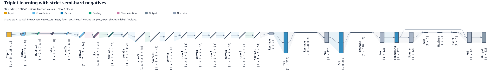
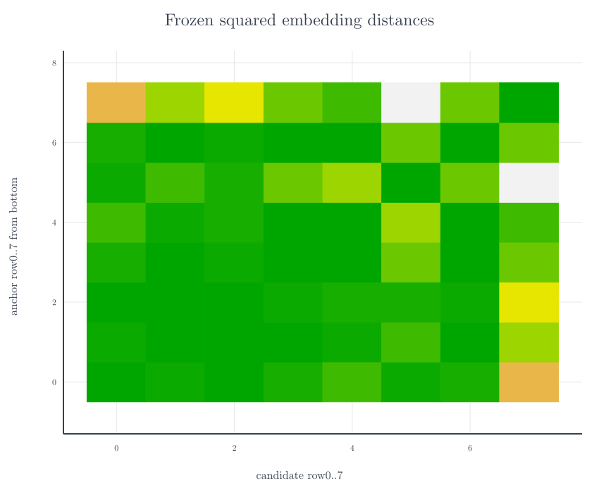
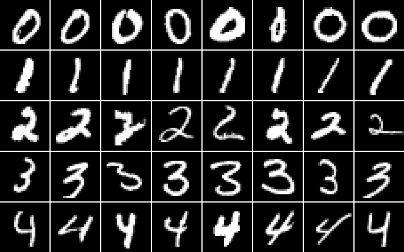
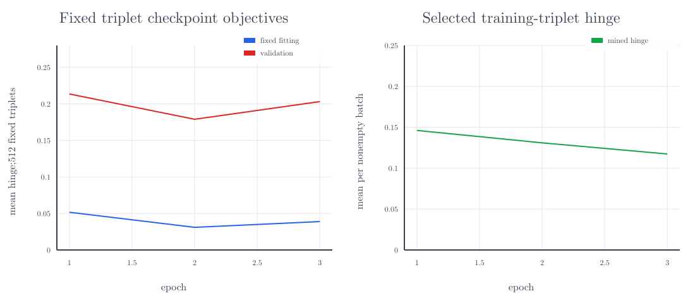
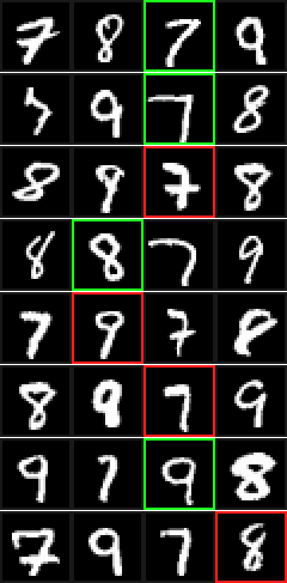
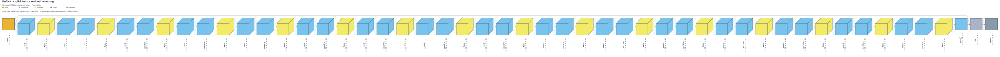

Triplet learning with strict semi-hard negatives
Abstract
Unit embeddings make similarity a squared-distance problem. Independent normalization,maxout and triplet derivatives precede full NN1 execution,actual class-balanced MNIST previews and visible detached mining plus tensor Adam fitting. Restored class-disjoint evaluation includes calibrated verification and actual retrieval episodes.
Source example: examples/cpp/source/nn/1_convolutional_neural_networks/1.8_other_vision_tasks/facenet_triplet.cpp.
The method
Learn128D unit embeddings by pulling an anchor toward a same-class positive while requiring a different-class negative to lie beyond a margin. Mine only strict semi-hard negatives from frozen current embeddings,recompute their gradient graph,and choose a checkpoint on unseen validation classes.
The concept diagram below is drawn by dm::graphics::Diagram. Its editable C++
source is the complete block below; regeneration uses the same datamunge toolchain
as the numerical examples. Exports consume the saved local SVG.
#include <dm/dm.hpp>
int main() {
std::filesystem::create_directories("build");
dm::graphics::Diagram diagram;
diagram.node("n0", {0.0, 0}, "Anchor and positive\nDifferent-class negative");
diagram.node("n1", {5.2, 0}, "Mine then recompute\nVisible Adam updates");
diagram.node("n2", {10.4, 0}, "Unit embeddings\nVerify and retrieve");
diagram.edge("n0", "n1").edge("n1", "n2");
diagram.save_svg("build/facenet_triplet_concept.svg");
}
Executed tensor architecture
This figure executes the inference configuration shown in the code, using a zero-valued shape probe without fitting or loading a checkpoint. Named stage boundaries group whole subgraphs where available; other nodes retain functional-layer detail. Exact batch-inclusive shapes and reachable parameter totals come from the trace. Shared linear scales map spatial dimensions and channel counts to blocks; the one-pixel visibility floor is disclosed in the legend. Labels use compact monospace text, rotate counterclockwise and sit beside their own glyphs. Arrows flow left to right; wide diagrams scroll at native size on the website.
#include <dm/dm.hpp>
int main() {
namespace n = dm::nn;
namespace m = n::models;
n::set_num_threads(2);
std::filesystem::create_directories("build");
n::ParameterStore p(17);
const auto c = m::FaceNetConfig::Compact();
n::Module architecture_model(
[&](const n::Tensor& image) { return m::FaceNetNN1(p, image, c).embedding; },
"Triplet learning with strict semi-hard negatives");
n::ModelPlotOptions options;
options.style = n::ModelPlotStyle::Flow;
options.detail = n::ModelPlotDetail::Blocks;
options.labels = {.type = n::ModelPlotLabel::NameAndShape, .size = 12, .wrap = 24};
options.spacing = {.layer = 24, .lane = 12, .label = 8, .margin = 20};
options.sizing.spatial_size = 96;
options.sizing.channel_size = 42;
options.sizing.minimum_extent = 1;
options.opacity = .8;
const auto diagram = architecture_model.plot(n::zeros({1, 28, 28, 1}), options);
diagram.save_svg("build/facenet_triplet_architecture.svg");
std::print(
"{} displayed nodes; {} reachable learned values.\n",
diagram.nodes().size(),
diagram.parameter_count());
}32 displayed nodes; 108040 reachable learned values.

What one triplet actually optimizes
A unit embedding places each nonzero image vector on the128D sphere. Squared distance then satisfies \(\|u-v\|^2=2-2u^Tv\),between0 and4. For an anchor a,positive p,and negative n,the margin objective is
When active,the derivatives are \(2(n-p),2(p-a),2(a-n)\) with respect to a,p,n. Otherwise all are zero,including an exact hinge boundary under the core ReLU convention. Repeated row roles accumulate gradients. Empty triplet selections return a graph-connected zero. The controlled illustration below uses unnormalized coordinates so that each derivative is easy to inspect; unit normalization is part of the actual encoder.
#include <dm/dm.hpp>
int main() {
namespace n = dm::nn;
auto x = n::tensor({0., 0., 1., 0., .5, 0., 2., 0.}, {4, 2}).requires_grad_();
const auto loss = n::models::MeanTriplet(x, {{0, 1, 2}, {0, 1, 3}});
const auto gradient = n::grad(loss, {x})[0];
if (std::abs(loss.item() - .475) > 1e-7)
return 1;
const auto coordinate = n::linspace(-.5, 2.5, 121);
const auto curve = n::relu(1. - n::square(coordinate) + .2);
auto a = dm::graphics::RPlot::create();
a.lines(coordinate.to_vector<double>(), curve.to_vector<double>(), "triplet hinge",
{37, 99, 235})
.title("Negative location and triplet hinge")
.x_label("negative x;anchor0,positive1")
.y_label("hinge with margin.2")
.y_limits(0, 1.5);
auto b = n::plot_tensor_map(n::reverse(gradient, {0}), -.6, .6);
b.title("Mean triplet coordinate derivatives");
b.x_label("x,y coordinate");
b.y_label("embedding row0..3 from bottom");
std::filesystem::create_directories("build");
auto layout = dm::graphics::RLayout::create(1, 2);
layout.add(a).add(b).size(1100, 480).fit_panels().save_svg(
"build/facenet_triplet_hinge.svg");
std::print(
"Two-triplet mean hinge {:.6f};first active,second inactive. Every independent "
"derivative,repeated index,empty selection and exact boundary is checked natively.\n",
loss.item());
}Two-triplet mean hinge 0.475000;first active,second inactive. Every independent derivative,repeated index,empty selection and exact boundary is checked natively.

Strict semi-hard mining is a discrete choice
For every ordered distinct same-class anchor/positive pair,we require \(d_{ap}<d_{an}<d_{ap}+\alpha\),then select the closest eligible negative. Ties select the lowest row index. A missing eligible negative produces no triplet;there is no hard/easy fallback. A fully collapsed batch therefore has no strict semi-hard selections. Mining freezes current embeddings and uses Float64 tensor differences of the original Float32 coordinates. Tensor comparisons/argmin perform the numerical selection;host containers serialize only selected row metadata. The bounded teaching miner uses a B-by-B-by-B eligibility mask.
#include <dm/dm.hpp>
int main() {
namespace n = dm::nn;
const auto x = n::tensor({0., 1., .5, 1.5, 2., -1., 1.5, 4.}, {8, 1});
const auto mining = n::models::MineSemiHard(x, {0, 0, 1, 1, 2, 2, 3, 3}, 2.f);
std::print("| anchor | positive | chosen negative |\n|---:|---:|---:|\n");
for (const auto &t : mining.triplets)
std::print("| {} | {} | {} |\n", t[0], t[1], t[2]);
std::print("{} ordered positive pairs;{} selected;{} without a strict semi-hard negative. "
"Source exhaustive sorted oracle confirms every selection and first-index tie.\n",
mining.positive_pairs, mining.triplets.size(), mining.without_semihard);
auto p = n::plot_tensor_map(n::reverse(n::models::MetricDistanceMatrix(x), {0}), 0, 25);
p.title("Frozen squared embedding distances");
p.x_label("candidate row0..7");
p.y_label("anchor row0..7 from bottom");
p.size(850, 700);
std::filesystem::create_directories("build");
p.save_svg("build/facenet_triplet_mining.svg");
}| anchor | positive | chosen negative |
|---|---|---|
| 0 | 1 | 3 |
| 2 | 3 | 4 |
| 3 | 2 | 0 |
8 ordered positive pairs;3 selected;5 without a strict semi-hard negative. Source exhaustive sorted oracle confirms every selection and first-index tie.

NN1 normalization,maxout and full-width execution
The NN1-style encoder retains eleven SAME ReLU convolutions,two LRN stages, four3x3/stride2 SAME pools,two adjacent-pair maxout dense layers,a linear128D head,and squared-norm-floored unit normalization. LRN uses radius2,bias1, alpha1e-4,beta.75. Equal maxout inputs split their gradient equally. A zero embedding stays zero;below the squared-norm floor epsilon1e-12,the derivative is identity/sqrt(epsilon). The native independent oracle covers zero/floored normalization,unique/tied maxout and every triplet-coordinate derivative.
The full220pxRGB graph has140,025,664 learned scalars/28 leaves. Unlike a shape-only census,the following block allocates it and executes one complete forward/backward pass. The compact28px grayscale model divides every conv width by8 and uses128-unit maxouts,retaining all13 recorded stages and128D output:108,040 learned scalars/28 leaves. Initializers,compact widths,LRN constants,padding and Adam are teaching choices;there are no pretrained face weights,BN moving moments or claimed face-recognition benchmarks.
#include <dm/dm.hpp>
int main() {
namespace n = dm::nn;
namespace m = n::models;
n::set_num_threads(2);
for (bool compact : {false, true}) {
const auto c = compact ? m::FaceNetConfig::Compact() : m::FaceNetConfig{};
n::ParameterStore p(17);
const int batch = compact ? 2 : 1;
const auto input = .5 + .45 * n::sin(n::arange(0, batch * c.side * c.side * c.input)
.reshape({batch, c.side, c.side, c.input}) *
.113);
const auto out = m::FaceNetNN1(p, input, c);
const auto weights = n::sin(n::arange(0, batch * 128).reshape({batch, 128}) * .17);
const auto gradients = n::grad(n::sum(out.embedding * weights), p.parameters());
if (p.count() != (compact ? 108040 : 140025664) || p.count() != m::FaceNetCensus(c) ||
gradients.size() != 28)
return 1;
double smallest = INFINITY;
for (const auto &g : gradients) {
if (!g.defined())
return 1;
const double norm = n::norm(g).item();
if (!std::isfinite(norm))
return 1;
smallest = std::min(smallest, norm);
}
if (compact && smallest <= 0)
return 1;
const auto norms = n::sum(n::square(out.embedding.to(n::DType::Float64)), {1});
if (n::max(n::abs(norms - 1.)).item() > 2e-6)
return 1;
std::print("{} NN1:{} learned scalars,28 finite gradients,13 stages,128D unit "
"output;smallest gradient norm {:.6g}. No fitting in this check.\n",
compact ? "Compact28" : "Full220RGB", p.count(), smallest);
}
}Full220RGB NN1:140025664 learned scalars,28 finite gradients,13 stages,128D unit output;smallest gradient norm 0.263834. No fitting in this check. Compact28 NN1:108040 learned scalars,28 finite gradients,13 stages,128D unit output;smallest gradient norm 0.120895. No fitting in this check.
Actual class-balanced digit inputs
Fitting uses only digits0–4 from the official MNIST training split,256 rows per class. Validation uses digits5–6 from that split,128/class;testing uses only digits7–9 from the official test split,128/class. Each training batch samples eight distinct images from each of the five fitting classes(P5K8), then shuffles the40 row IDs. The preview uses one actual such batch,regrouped by class for readability;pixel operations stay in the tensor library.
#include <dm/dm.hpp>
int main() {
namespace n = dm::nn;
std::filesystem::path cache;
if (const auto *p = std::getenv("DATAMUNGE_DATA_DIR"))
cache = p;
else if (const auto *p = std::getenv("XDG_CACHE_HOME"))
cache = std::filesystem::path(p) / "datamunge/datasets";
else
cache = std::filesystem::path(std::getenv("HOME")) / ".cache/datamunge/datasets";
dm::datasets::fetch("mnist", (cache / "mnist").string());
const auto train = n::load_mnist((cache / "mnist").string(), "train");
const auto buckets = n::models::SiameseBuckets(train, {0, 1, 2, 3, 4}, 256);
auto rows = n::models::MetricBatchRows(buckets, 8, 1000);
const auto labels = n::models::MetricDatasetLabels(train);
std::stable_sort(rows.begin(), rows.end(), [&](auto a, auto b) {
return labels[a] < labels[b];
});
std::filesystem::create_directories("build");
n::save_image_grid(n::models::SiameseImages(train, rows), "build/facenet_triplet_data.png",
8, 0, 1, 2, 1, 3);
std::print(
"Actual P5K8 batch:40 distinct rows,grouped for display into five rows of "
"digits0,1,2,3,4. Fitting256/class;validation128/class(5,6);test128/class(7,8,9).\n");
}Actual P5K8 batch:40 distinct rows,grouped for display into five rows of digits0,1,2,3,4. Fitting256/class;validation128/class(5,6);test128/class(7,8,9).

Visible mining,recomputation and Adam
The complete compact encoder fits three epochs of32 class-balanced40-image
batches. Frozen current embeddings select strict semi-hard triplets;then a
fresh differentiable forward pass minimizes mean selected-triplet hinge plus
.00005*sum(kernel²) using explicit Adam(.001). All ordered positive pairs
are considered:5*8*7=280 per batch. Empty mining batches skip the update.
The learning loop prints both selected and missing-negative counts so that
a changing training set cannot be mistaken for a fixed loss probe.
Fixed512-triplet fitting and validation probes do not depend on the miner. The lowest validation probe selects the learned checkpoint,which must reproduce its score on restore. Only validation pairs calibrate the squared-distance threshold;512 balanced held-out pairs then determine accuracy,confusion and pairwise AUC(half credit for tied same/different distances). Finally,256 three-way held-out one-support tasks compare trained and untrained embeddings. Fixed probes use the same float.2 margin as the differentiable hinge;the legacy printed probe used a double.2 constant,a negligible stated rounding change. No test labels choose a checkpoint,threshold or update.
#include <dm/dm.hpp>
int main() {
namespace n = dm::nn;
namespace m = n::models;
n::set_num_threads(2);
std::filesystem::path cache;
if (const auto *p = std::getenv("DATAMUNGE_DATA_DIR"))
cache = p;
else if (const auto *p = std::getenv("XDG_CACHE_HOME"))
cache = std::filesystem::path(p) / "datamunge/datasets";
else
cache = std::filesystem::path(std::getenv("HOME")) / ".cache/datamunge/datasets";
dm::datasets::fetch("mnist", (cache / "mnist").string());
const auto train = n::load_mnist((cache / "mnist").string(), "train"),
test = n::load_mnist((cache / "mnist").string(), "test");
if (train.images.shape()[0] != 60000 || test.images.shape()[0] != 10000)
return 1;
const auto fitting = m::SiameseBuckets(train, {0, 1, 2, 3, 4}, 256),
probe_buckets = m::SiameseBuckets(train, {0, 1, 2, 3, 4}, 32),
validation = m::SiameseBuckets(train, {5, 6}, 128),
testing = m::SiameseBuckets(test, {7, 8, 9}, 128);
const auto train_labels = m::MetricDatasetLabels(train);
const auto flatten = [](const m::DigitBuckets &buckets) {
std::vector<std::size_t> rows;
for (const auto &bucket : buckets)
rows.insert(rows.end(), bucket.begin(), bucket.end());
return rows;
};
const auto probe_rows = flatten(probe_buckets), val_rows = flatten(validation),
test_rows = flatten(testing);
const auto row_labels = [&](const std::vector<std::size_t> &rows) {
std::vector<int> labels;
for (const auto row : rows)
labels.push_back(train_labels[row]);
return labels;
};
const auto probe = m::FixedMetricTriplets(row_labels(probe_rows), 512, 71),
val_triplets = m::FixedMetricTriplets(row_labels(val_rows), 512, 73);
const auto val_pairs = m::SiamesePairs(validation, 256, 79),
test_pairs = m::SiamesePairs(testing, 512, 83);
const auto tasks = m::SiameseTasks(testing, 256, 89);
n::ParameterStore p(17);
const auto c = m::FaceNetConfig::Compact();
// Warm all28 leaves before Adam. No hidden BN or optimizer state in the model.
{
n::NoGradGuard guard;
m::FaceNetNN1(p, n::zeros({1, 28, 28, 1}), c);
}
const auto encode = [&](const n::ImageDataset &data, const std::vector<std::size_t> &rows) {
n::NoGradGuard guard;
std::vector<n::Tensor> parts;
for (std::size_t start = 0; start < rows.size(); start += 64) {
const auto end = std::min(rows.size(), start + 64);
parts.push_back(
m::FaceNetNN1(p, m::SiameseImages(data, {rows.begin() + start, rows.begin() + end}),
c)
.embedding);
}
return n::concat(parts, 0);
};
const auto distances = [](const n::Tensor &features, const std::vector<std::size_t> &rows,
const std::vector<m::VerificationPair> &pairs) {
std::map<std::size_t, std::int64_t> index;
for (std::size_t i = 0; i < rows.size(); ++i)
index[rows[i]] = i;
std::vector<std::int64_t> left, right;
for (const auto &pair : pairs) {
left.push_back(index.at(pair.left));
right.push_back(index.at(pair.right));
}
return m::MetricPairDistance(features, left, right);
};
const auto pair_labels = [](const std::vector<m::VerificationPair> &pairs) {
std::vector<double> labels;
for (const auto &pair : pairs)
labels.push_back(pair.same);
return n::from_vector(labels);
};
std::vector<m::VerificationPair> task_pairs;
std::vector<std::int64_t> correct;
for (const auto &task : tasks) {
correct.push_back(task.correct);
for (const auto row : task.support)
task_pairs.push_back({task.query, row, 0});
}
const auto correct_columns = n::from_vector(correct);
const auto episode_scores = [&](const n::Tensor &features) {
return (-distances(features, test_rows, task_pairs)).reshape({256, 3});
};
const double initial = m::MeanTriplet(encode(train, probe_rows).to(n::DType::Float64), probe)
.item(),
untrained = m::SiameseOneShotAccuracy(episode_scores(encode(test, test_rows)),
correct_columns)
.item();
n::OptimizerConfig config;
config.kind = n::OptimizerKind::Adam;
n::Optimizer adam(p, .001, config);
std::filesystem::create_directories("build");
std::filesystem::create_directories("figures");
std::vector<double> epochs, fixed_fit, fixed_val, mined_loss;
double best = INFINITY;
int selected = 0, steps = 0, total_mined = 0;
std::print("| epoch | selected hinge | mined | missing negatives | fixed fitting | fixed "
"validation |\n|---:|---:|---:|---:|---:|---:|\n");
for (int epoch = 1; epoch <= 3; ++epoch) {
double sum = 0;
int updates = 0, mined = 0, missing = 0;
for (int batch = 0; batch < 32; ++batch) {
const auto rows = m::MetricBatchRows(fitting, 8, epoch * 1000 + batch);
const auto images = m::SiameseImages(train, rows);
n::Tensor frozen;
{
n::NoGradGuard guard;
frozen = m::FaceNetNN1(p, images, c).embedding;
}
const auto mining = m::MineSemiHard(frozen, row_labels(rows));
if (mining.positive_pairs != 280)
return 1;
missing += mining.without_semihard;
if (mining.triplets.empty())
continue;
// Recompute the current encoder graph after detached discrete mining.
const auto features = m::FaceNetNN1(p, images, c).embedding;
const auto hinge = m::MeanTriplet(features, mining.triplets);
if (!std::isfinite(hinge.item()))
return 1;
sum += hinge.item();
adam.minimize(hinge + .00005 * m::WeightSquares(p));
++updates;
++steps;
mined += int(mining.triplets.size());
}
if (updates == 0)
return 1;
const double
fit = m::MeanTriplet(encode(train, probe_rows).to(n::DType::Float64), probe).item(),
val =
m::MeanTriplet(encode(train, val_rows).to(n::DType::Float64), val_triplets).item();
epochs.push_back(epoch);
fixed_fit.push_back(fit);
fixed_val.push_back(val);
mined_loss.push_back(sum / updates);
total_mined += mined;
if (val < best) {
best = val;
selected = epoch;
p.save("build/facenet_triplet_best.npz");
}
std::print("| {} | {:.6f} | {} | {} | {:.6f} | {:.6f} |\n", epoch, sum / updates, mined,
missing, fit, val);
}
p.load("build/facenet_triplet_best.npz");
const auto val_features = encode(train, val_rows);
if (std::abs(m::MeanTriplet(val_features.to(n::DType::Float64), val_triplets).item() -
best) > 1e-10)
return 1;
const auto threshold = m::CalibrateMetricDistanceThreshold(
distances(val_features, val_rows, val_pairs), pair_labels(val_pairs));
const auto test_features = encode(test, test_rows),
test_distances = distances(test_features, test_rows, test_pairs);
const auto metric =
m::MetricDistanceMetrics(test_distances, pair_labels(test_pairs), threshold.item())
.to_vector<double>();
const auto scores = episode_scores(test_features);
const auto accuracy = m::SiameseOneShotAccuracy(scores, correct_columns).item();
const auto verification_truth=pair_labels(test_pairs), verification_prediction=n::less_equal(test_distances,threshold.item()).to(n::DType::Int64);
n::ConfusionMatrix verification_counts(2);verification_counts.add(verification_truth.to(n::DType::Int64),verification_prediction);
verification_counts.save_svg("build/facenet_triplet_verification.svg",{.title="512 held-out pair decisions",.labels={"different","same"}});
n::save_npz("build/facenet_triplet_verification.npz",{{"truth",verification_truth},{"prediction",verification_prediction},{"counts",verification_counts.to_tensor()}});
const auto final =
m::MeanTriplet(encode(train, probe_rows).to(n::DType::Float64), probe).item();
n::save_image_grid(m::SiameseEpisodeGallery(test, tasks, scores),
"build/facenet_triplet_episodes.png", 1, 0, 1, 2, 1, 2);
std::filesystem::copy_file("build/facenet_triplet_episodes.png",
"figures/facenet_triplet_episodes.png",
std::filesystem::copy_options::overwrite_existing);
std::print("{} explicit Adam updates;{} mined triplets;selected epoch{} with restored "
"validation hinge {:.6f};fixed fitting {:.6f}->{:.6f}.\nValidation-only "
"threshold {:.6f};512 unseen pairs:accuracy {:.6f},AUC {:.6f},TP/FP/FN/TN "
"{:.0f}/{:.0f}/{:.0f}/{:.0f};mean same/different distances {:.6f}/{:.6f}.\n256 "
"unseen3-way tasks:trained {:.6f},untrained {:.6f},chance1/3.\n",
steps, total_mined, selected, best, initial, final, threshold.item(), metric[0],
metric[3], metric[4], metric[5], metric[6], metric[7], metric[1], metric[2],
accuracy, untrained);
auto a = dm::graphics::RPlot::create(), b = dm::graphics::RPlot::create();
a.lines(epochs, fixed_fit, "fixed fitting", {37, 99, 235})
.lines(epochs, fixed_val, "validation", {220, 38, 38})
.title("Fixed triplet checkpoint objectives")
.x_label("epoch")
.y_label("mean hinge;512 fixed triplets")
.y_limits(0, .28);
b.lines(epochs, mined_loss, "mined hinge", {22, 163, 74})
.title("Selected training-triplet hinge")
.x_label("epoch")
.y_label("mean per nonempty batch")
.y_limits(0, .25);
auto layout = dm::graphics::RLayout::create(1, 2);
layout.add(a).add(b).size(1100, 480).fit_panels().save_svg(
"build/facenet_triplet_training.svg");
}| epoch | selected hinge | mined | missing negatives | fixed fitting | fixed validation |
|---|---|---|---|---|---|
| 1 | 0.146094 | 6317 | 2643 | 0.051628 | 0.213541 |
| 2 | 0.130946 | 5779 | 3181 | 0.030988 | 0.178930 |
| 3 | 0.117323 | 3475 | 5485 | 0.038911 | 0.203160 |
96 explicit Adam updates;15571 mined triplets;selected epoch2 with restored validation hinge 0.178930;fixed fitting 0.194942->0.030988. Validation-only threshold 0.770138;512 unseen pairs:accuracy 0.630859,AUC 0.668335,TP/FP/FN/TN 182/115/74/141;mean same/different distances 0.608104/0.989383. 256 unseen3-way tasks:trained 0.496094,untrained 0.386719,chance1/3.


The short run can reduce the fixed fitting objective much more than the unseen-class objective. Its held-out accuracy and AUC describe this bounded MNIST adaptation,not face recognition. An improvement over an untrained baseline still leaves substantial error visible in the retrieval gallery.

Regenerate adjacent views from this run
#include <dm/dm.hpp>
int main(){std::filesystem::copy_file("build/facenet_triplet_episodes.png","build/export_facenet_triplet_episodes.png",std::filesystem::copy_options::overwrite_existing);}#include <dm/dm.hpp>
int main(){std::filesystem::copy_file("build/facenet_triplet_verification.svg","build/export_facenet_triplet_verification.svg",std::filesystem::copy_options::overwrite_existing);}Conclusion
Tensor distances and strict mining preserve deterministic source selection rules without host numerical loops. Visible recomputation and Adam distinguish discrete selection from gradient flow. The full graph,independent derivatives,fixed probes and actual held-out images document both the mechanism and this small digit experiment’s generalization limits.
References
- [Schroff,Kalenichenko and Philbin(2015),FaceNet:A Unified Embedding for Face Recognition and Clustering](https://arxiv.org/abs/1503.03832).